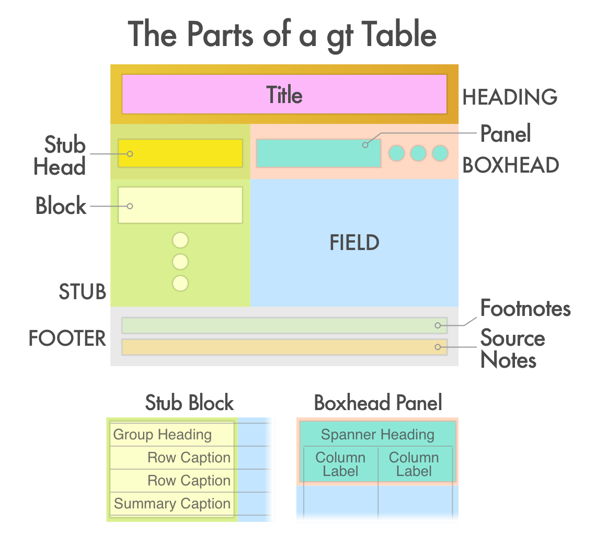
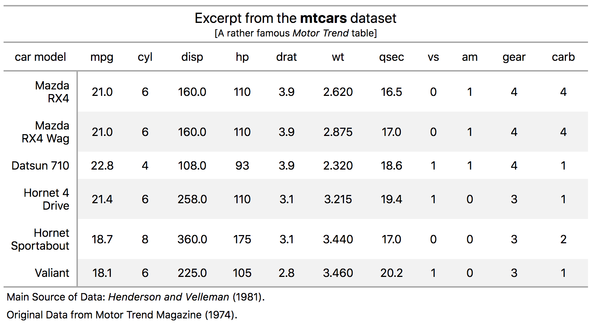
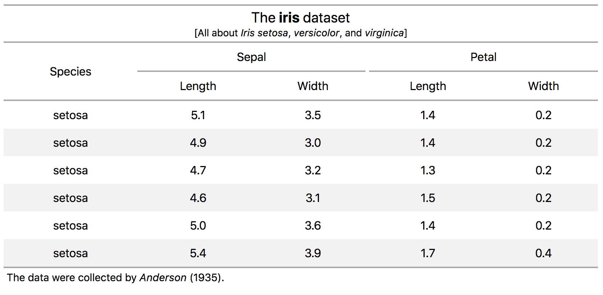
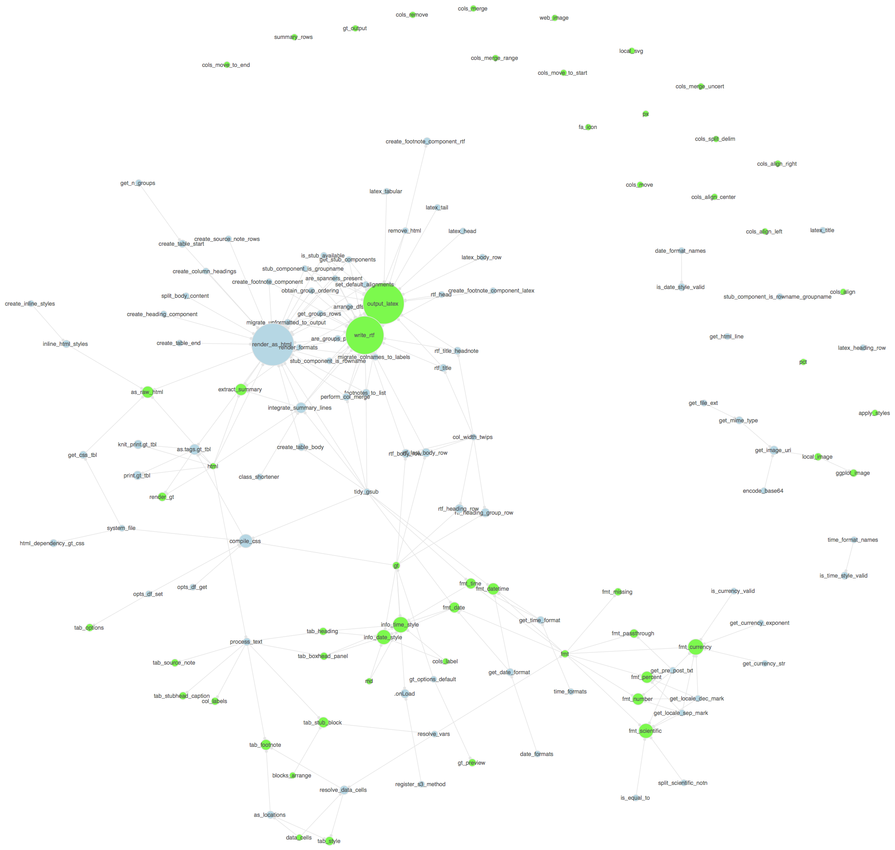

The gt package allows anyone to easily create display tables from tabular data. The building of such tables can be performed with a clear separation of concerns: you don’t have to decide how the tabular data gets transformed and structured while also worrying about aesthetics.
Let’s identify the underlying components of a table and understand their roles. The model for the constituent parts of a table can be explained in part by the following schematic:

The main parts of a table (and their subparts) are:
- the heading (optional; possibly with a table number, title, or headnote)
- the stub (optional; contains a stub head and row captions, optionally within stub blocks having group headings and possibly summary captions)
- the boxhead (contains column labels, optionally within boxhead panels having one or more spanner headings)
- the field (contains cells, columns, and rows)
- the footer (optional; possible with footnotes and source notes)
The heading part contains the table title and the optional headnote subpart. A table heading is often overlooked but it really shouldn’t be.
The stub is the area to the left in a table that contains row captions, summary captions, and group headings. Those subparts can be grouped in a sequence of stub blocks. The stub head provides a location for a caption that describes the stub. The stub is optional since there are cases where a stub wouldn’t be useful.
The boxhead is the table part that contains the column labels, which can themselves be supplemented by spanner headings that are placed above. Groupings of spanner headings and column labels can be contained in one or more boxhead panels.
The field is located below the boxhead and to the right of the stub. It is composed of cells, where vertical and horizontal collections are termed columns and rows.
The footnotes component within the footer can contain explanatory statements targeted to one or more cells. This is done by affixing reference symbols to points of reference.
The source notes component of the footer is for provision of citation information for the presented data. As it is commonly seen, the citation is preceeded by the word Source.
The formalized table parts fit together well and can be used effectively for the vast majority of the tables that one may create. However, this structuring is meant to be flexible and not at all rigid. We put forward two main considerations for tabular presentation:
use common sense when planning a table
imagine the viewing of the table from the standpoint of the user
When taking these considerations to heart, we may naturally arrive to an overarching design objective:
The single objective is to make the display table as easy to read and to
understand as the nature of the material will permit.Examples of Display Table Creation using gt
The mtcars dataset can be suitably transformed into a display table (for sake of brevity, we’ll use just the first 6 rows). We can use the gt() function to initiate the process (providing mtcars to the data argument), creating a table object. The mtcars dataset has car names as rownames, so we will expose those in a column with the rownames_to_stub = TRUE option After that, a few functions can be used to refine the display table:
-
fmt_number(): allows us to format numbers with some exactness -
tab_stubhead_caption(): adds a caption to the stubhead (the box in the top-left of the table) -
tab_heading(): an opportunity to add a title and optionally a headnote -
tab_source_note(): a note that states the source of the presented data
# 1 - we take the first six rows of `datasets::mtcars` data.frame
# 2 - we are formatting numbers in 4 columns to have 1 decimal place
# 3 - we are formatting numbers in the `wt` column to have 3 decimal places
# 4 - the dataset has rownames so they've been moved to the stub;
# here, we supply a stubhead caption
# 5 - a heading is added, both parts are interpreted as Markdown
# 6 - two source notes are added, the first is interpreted as Markdown
mtcars_tbl <-
gt(mtcars[1:6, ], rownames_to_stub = TRUE) %>% # 1
fmt_number(
columns = vars(mpg, disp, drat, qsec),
decimals = 1
) %>% # 2
fmt_number(
columns = vars(wt),
decimals = 3
) %>% # 3
tab_stubhead_caption(caption = "car model") %>% # 4
tab_heading(
title = md("Excerpt from the **mtcars** dataset"),
headnote = md("[A rather famous *Motor Trend* table]")
) %>% # 5
tab_source_note(
source_note = md("Main Source of Data: *Henderson and Velleman* (1981).")) %>% # 6
tab_source_note(
source_note = "Original Data from Motor Trend Magazine (1974).") # 6Invoking the object interactively displays it in the Viewer. In R Markdown chunks, the object becomes an HTML table.

Let’s build another table using another well-known dataset. In this table, we embrace the naming convention provided in the iris dataset’s column names. Having columns in dot notation (such as Sepal.Length and Petal.Width) provide a means to specify heading levels as <spanner_heading>.<column_heading>. So long as we follow this column-name pattern, we can use the cols_split_delim() function to parse and expand the given column names into one or more boxhead panels with group and column headings.
# 1 - we take the `datasets::iris` data.frame
# 2 - the dot-notation column naming format (i.e., `[heading].[caption]`)
# can be used to create group headings to add structure
# 3 - the `Species` column is moved to the start of the column series
# 4 - we are formatting numbers in the named columns to have 1 decimal place
# 5 - a heading is added
# 6 - a source note is added
iris_tbl <-
gt(iris[1:6, ]) %>% # 1
cols_split_delim(delim = ".") %>% # 2
cols_move_to_start(columns = vars(Species)) %>% # 3
fmt_number(
columns = vars(Sepal.Length, Sepal.Width, Petal.Length, Petal.Width),
decimals = 1
) %>% # 4
tab_heading(
title = md("The **iris** dataset"),
headnote = md("[All about *Iris setosa*, *versicolor*, and *virginica*]")) %>% # 5
tab_source_note(
source_note = md("The data were collected by *Anderson* (1935).")) # 6This is how the table appears:

Package API
The package API consists of the following functions:
Create/Modify Table Parts
-
gt()– create a gt table object -
gt_preview()– preview a gt table object -
tab_heading()– add a table heading -
tab_stub()– add a stub to a table -
tab_stubhead_caption()– add caption text to the stubhead -
tab_stub_block()– arrange a table stub into blocks -
tab_boxhead_panel()– arrange a boxhead into panels -
tab_footnote()– add one or more footnotes -
tab_source_note()– add a source note citation -
tab_style()– add custom styles to one or more cells -
tab_options()– modify the table output options
Format Data
-
fmt_number()– format numeric values -
fmt_scientific()– format values to scientific notation -
fmt_percent()– format values as a percentage -
fmt_currency()– format values as currencies -
fmt_date()– format values as dates -
fmt_time()– format values as times -
fmt_datetime()– format values as date-times -
fmt_missing()– format missing values
Modify Columns
-
cols_align_left()– use left alignment -
cols_align_center()– use center alignment -
cols_align_right()– use right alignment -
cols_move()– move one or more columns -
cols_move_to_start()– move one or more columns to the start -
cols_move_to_end()– move one or more columns to the end -
cols_remove()– remove one or more columns -
cols_label()– relabel one or more columns -
cols_split_delim()– create group names and column labels via delimited column names -
cols_merge()– merge two columns to a single column with a formatter -
cols_merge_uncert()– merge two columns to a value + uncertainty column -
cols_merge_range()– merge two columns to a value range column
Modify Rows
-
blocks_arrange()– modify the ordering of the stub block groups
Add Rows
-
summary_rows()– add summary rows using aggregation functions
Export Table
-
write_rtf()– save a gt table object as an RTF file -
as_raw_html()– get the HTML content of a gt table -
extract_summary()– extract a summary table from a gt table object
Inner Workings
For those interested in the package design itself and especially how the gt functions relate to each other, here is a graph showing just that:

The green nodes represent those functions that are exported. The relative sizing of nodes is scaled the number of package functions called by each (no matter whether the function is exported or not). Each edge represents the relationship called_in.
Code of Conduct
Please note that this project is released with a Contributor Code of Conduct. By participating in this project you agree to abide by its terms.